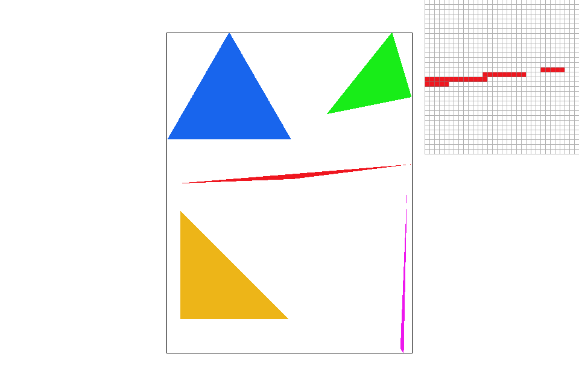
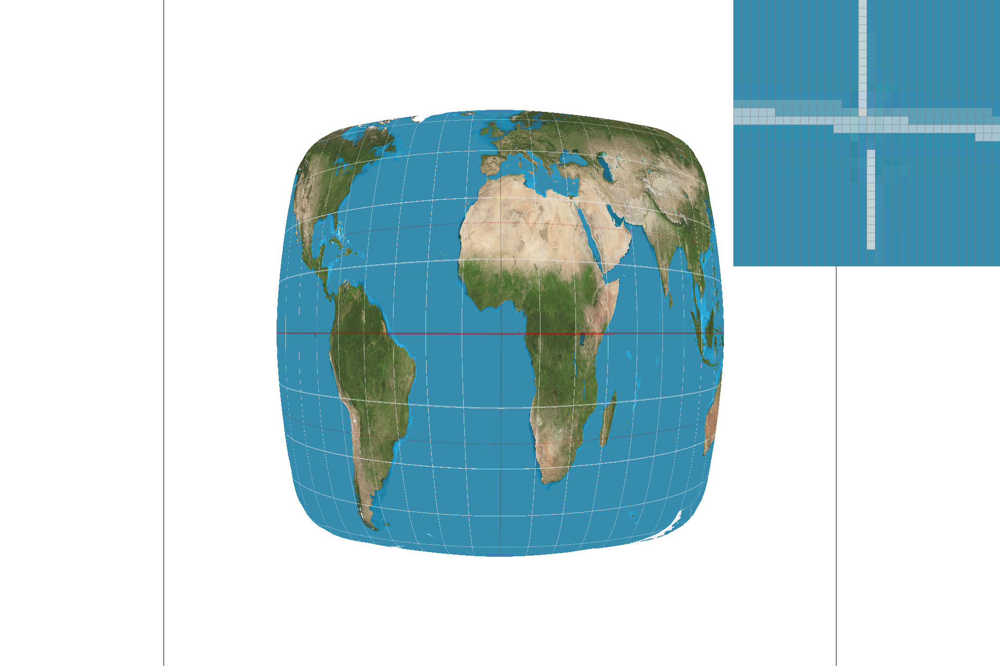
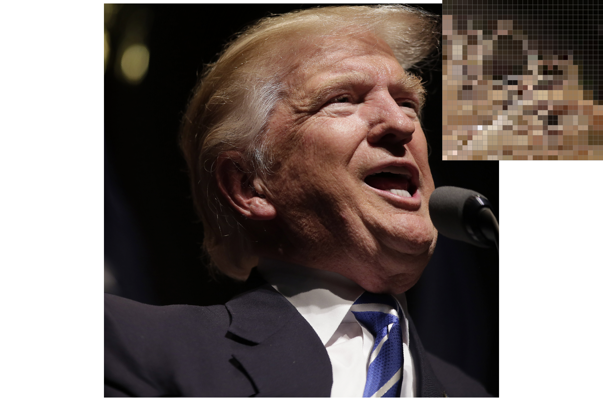

Overview
This project consisted of the implementation of a simple rasterizer, able to render colored or textured polygons to the screen using various methods of sampling. In addition, multiple methods, including supersampling and level mapping, were implemented to reduce unwanted artifacts resulting from aliasing at various magnification levels.
Begining with the task of drawing triangles to the screen, a simple pass through the bounding box of the triangle was used, testing each sample point for inclusion using the line test learned in class. To improve the image and reduce effects from aliasing, the sampling rate was increased through supersampling, taking multiple samples from the desired image per screen pixel and averaging their results. This greatly reduced aliasing effects from inadequate sample rates, but resulted in longer runtimes due to the increased number of sample points. To conclude section I, I implemented the basic transformation matrices shown in lecture to allow for the transformation of rendered triangles and polygons as shown in part 3. This also allowed for panning and zoom.
After triangles could be successfully rendered, I implemented the ability to sample from textures. To begin, I first created a function to convert from the x, y screen position to its corresponding barycentric coordinates, which could then easily be converted to the corresponding u, v, coordinates on the texture triangle corresponding to the triangle being rendered. With texture mapping, the issue of aliasing was still present. To improve the sampled image, bilinear sampling was introduced, interpolating between the four neareset points to the desired sample point to obtain a smoother transition between pixels. Finally, level sampling was implemented to better account for artifacts resulting from the differences in mapping from texels to screen pixels. This was done through estimating the size of the texels relative to the size of the screen pixel being rendered to to select a level to sample from in a precomputed mipmap. This included support for nearest level sampling and binlinear level sampling, in which interpolation is done between two adjacent level maps. The resulting images from texture mapping using level mapping and supersampling had greatly reduced the presence of jaggies and other aliasing effects.
Overall, I learned a great deal on the practical side of implementing the methods discussed in lecture in discussion. I for one experienced many problems with conversions between the various representations of numbers in C++, finding strange lines appearing as the result from inadequate floating point precision. Additionally, the added issue of careful bounds checking to ensure that no bad memory accesses were made led to questions about what to do about edge cases and how they should be treated. Having played around with camera space before in some old SDL applications, implementing the transformation matrices and working with the stack on the robot vector file also taught me about more intuitive ways of chaning viewpoint and making frameworks that scale into three dimensions easily. Also extremely important for me was finally getting a concrete example of texture mapping and how exactly finding the u, v difference vectors was useful in identifying which level to sample from. It didn't really click for me until actually having to think about the barycentric coordinates and exactly what those vectors looked like and what they physically represented. I am happy to say I walk away with this project with a much better idea of how computers convert from models to screen pixels and a better grasp of the ideas taught so far.
Section I: Rasterization
Part 1: Rasterizing single-color triangles
To rasterize triangles using DrawRend::rasterize_triangle, I first had to identify the bounding box
of the triangle, finding the minimum x and y
values of the three vertices and then repeating for the maximum x and y values. To avoid bad array accesses
from a triangle point that is off the screen, values below 0 and values greater than or equal to the height or
width
of the screen are not sampled from. From here, we make a pass in a double for loop, iterating over every pixel
in the bounding box specified by these two points.
For each of these pixels, we check the center of the pixel, (x + 0.5, y + 0.5), to see if it lies
within the bounds of the triangle. To accomplish this, I used the line test specified in class, testing to see
that the sample point lay on the same side of all three half planes, meaning that it would have the same sign
from all three calculations. In my implementation, I did not implement the rules regarding triangle edges, so
here, sample points that lie on the edge of a triangle are included as part of the triangle, meaning that some
points may be rendered multiple times should the point lie on the border of multiple triangles.
Because this algorithm just does a constant time operation to check every point in the bounding box of the traingle, it cannot be worse that one that checks each sample within the bounding box of the traingle.
svg/basic/test4.svgIn the above rendering of triangles, it is noticable that jaggies are a large problem as this simple method of sampling is not hardy enough to capture the high frequencies of the continuous slope near the triangle edge.
In this portion of the project, I would have issues regarding white lines sometimes strinking through the image resulting from both inadequate floating point precision and not including edges in the bounds test. To fix this, converting floats to doubles before performinag operations on them and including points that lie on edges for the triangle bounds testing removed all the unwelcome lines.
Part 2: Antialiasing triangles
To supersample, I modified the code in DrawRend::rasterize_triangle to take sample_rate
samples for each screen pixel. Letting
samples_per_side = sqrt(sample_rate), each screen pixel then became a samples_per_side
by samples_per_side square of subpixels. To hit these each of these subpixels, I introduced two new
for loop variables, i and j, both initialized to 0 and looping up to samples_per_side. These
subpixels have a side length of 1 / samples_per_side as we are splitting up 1 screen pixel length
into samples_per_side subpixels. Additionally an offset of half this length was needed to ensure
sampling at the center of these subpixels, yielding the following formulas for the subpixel points to sample
from:
sub_x = x + subpixel_size * j + offsetsub_y = y + subpixel_size * i + offsetThis does not affect the results from part 1 as if the sample rate is just 1 sample per pixel, then we see that
there is only one subpixel per xcreen pixel at (x + 0.5, y + 0.5) as before. For each of these
sample points, we repeat the sample process from step one, only now, to arrive at the final color to place in
the framebuffer for a given screen pixel, I had to first go through the sampled color for every subpixel in the
current pixel and average their values in get_pixel_color, adding an additional step to the
rasterization pipeline.
| Sample Rate | Resulting Image |
|---|---|
| 1 | |
| 4 | |
| 16 |
Above we can see the antialiasing power of super sampling. In the standard sample rate or 1, we see the same aliasing effect from before in areas with high frequency components, such as the two edges of a triangle meeting at a small angle. As the sample rate increases to 4, we find a noticeable improvement, now pixels that are partially covered by the triangle reflect that fact by being partially colored the triangle's color, giving a more gradual feel the the edges and fixing the apparent gap in the triangle. An even better result is seen with sample rate 16, with more smoothing and hardly noticeable jaggies.
While doing this portion of the project, I was frustrated for a long time with my get_pixel_color
method. I had completely forgotten how Colors used floats to store rgba values while to the PixelColorStorage
used unsigned chars. This led to a long while of wondering why my images kept turing out black, but a view well
placed print statements later quickly diagnosed the issue and led to me dividing values by 255.0 while
averaging.
Part 3: Transforms
After implementing the transform matrices from class, I could now transform polygons as specified in the svg
files. I had a small bug while implementing this portion whereas I did not realize that the functions
sin and cos took in radians rather than degrees. A small conversion quickly fixed the
issue.
Here I try to make cubeman run. To accomplish this, I added rotations to each of his individual limbs and minor corrective translations. The entire left leg for example was rotated by 45 degrees, and another rotation of the lower leg was stacked on in the opposite direction. In this way, each limb was position to give the impression that cubeman is running to the left. I also scaled up this thights and biceps to make him slightly more proportional.
Section II: Sampling
Part 4: Barycentric coordinates
Barycentric coordinates are simply another way of representing points in the context of a triangle which have convenient properties when interpolating between values at three points or mapping points to another coordinate system knowing only how the three triangle vertices map. Barycentric coordinates consist of 3 components for a triangle with vertices A, B, and C: (alpha, beta, gamma). These three components represent the weights with which we can take the weighted average of A, B, and C respectively to arrive at our point:
(x, y) = alpha * (x_A, y_A) + beta * (x_B, y_B) + gamma * (x_C, y_C)It is important to note that alpha, beta, and gamma must sum to 1 given that it is a weighted average. While A, B, and C are seen as x, y coordinates above, they really can be any 3 values that we are interpolating between, including colors, other coordinates, etc. It is also of note that vertices themselves are just represented with the corresponding weight set to 1 and the others to 0. For example, the vertex A would result from setting alpha to 1 and both beta and gamme to 0: A = (1, 0, 0), as resulting from the formula and sum rules above. Barycentric coordinates are also useful for bounds checking as any negative weight means that the point is out of the triangle
To give an example, consider the below image. Let A be the upper left vertex, B be the upper right vertex, and C be the remaining vertex. A coordinate (alpha, beta, gamma) will have its red component set to alpha * 255, its green component set to beta * 255, and its blue component set to gamma * 255.
With the above setup, notice how the vertex A is (1, 0, 0), corresponding to the color red, the vertex B at (0, 1, 0) corresponds to the color green, and C at (0, 0, 1) corresponds to the color blue. Between these three vertices, using barycentric coordinates, we can visualize how each point is a weighted average of the three vertices of the triangle, resulting in a smooth transition of interpolated colors when moving from vertex to vertex and within the triangle. We are able to cover a large spectrum of color and calculate the expected color at any point in the triangle with only having specified just 3 colors, one for each vertex.
svg/basic/test7.svg again showing a smooth transition of color for each traingle making
up the circle
Part 5: "Pixel sampling" for texture mapping
In pixel sampling, to determine the color we should give a pixel in a triangle (x, y) (or subpixel when supersampling), we first compute its barycentric coordinates as explained in the previous section. If we wish to texture this triangle, given the 3 vertices of the corresponding triangle in the texture we are trying to apply, we can then convert our barycentric coordinates into the u, v coordinates of the texture to be mapped. At this point, we use only mipmap level 0.
For nearest pixel sampling, we round off u and v to the nearest integer value (after scaling to the texture height and width)to get the coordinates of the "nearest texel" in the texture image. The color of this texel is then the result of the sample.
In bilinear pixel sampling, we add another step in the mix. While fast, nearest pixel sampling can result in images with artifacts and aliasing if the difference between adjacent screen pixels becomes too far removed from the distance between their corresponding texels. In bilinear pixel sampling, to help alleviate these effects, we look at the four nearest texels to the desired point and interpolate between them to arrive at an estimate of a good average color. First we pair off the four nearest texels and run two linear interpolations between them resulting in two colors. We then interpolate again between these two colors to get our final value, for a total of three interpolations.
Below is an example of both nearest and bilinear pixel sampling at sample rates 1 and 16.
| Sample Rate | Nearest Pixel Sampling | Bilinear Pixel Sampling |
|---|---|---|
| 1 |  | |
| 16 |
We notice that bilinear pixel sampling beats nearest pixel sampling by a long way when the sample rate is 1. With nearest pixel sampling, we see heavy aliasing, with many portions of the longitude lines missing due to this, especially in areas where the texture mapping happen to leave textures minified, meaning that the sample rate has been further reduced relative to the size of the texels of the texture image, worsening the aliasing effect. With bilinear pixel sampling, we see that these areas are smoothed over and averaged, reducing the jaggedness and closing the gap seen in the nearest pixel sampling image.
At a sample rate of 16, the relative difference between the two images shrinks dramatically as now the higher sampling rate compensates for the minified texture areas, fixing most of the aliasing issue, but there is still a slight improvement in the bilinear image, showing that the grid lines are better averaged and smoothed out, whereas the neareset pixel image still shows some evidence of jaggies.
Bilinear pixel sampling is useful in cases where the texture is minified on the screen so that adjacent screen pixels map to texels which are further apart like the corners and left and right sides of the images above, where the original texture has been squished. This means that the samples for screen pixels are taken at a lower rate relative to the texels, leading to more aliasing effects. Equivalently, the texture can be thought of now as having more high frequencies as a result of being minified, squeezing more texel variation in a smaller screen space. There will be a large difference between the two ampling methods in this case as nearest pixel sampling doesn't do anything about this issue wheras bilinear sampling averages and smooths out the high frequencies, reducing aliasing and leading to a more comfortable image to look at.
When the texture is magnified however, adjacent screen pixels will map to texels that are relatively close together, meaning that interpolating between these already close texels will likely yield nearly the same color as just sampling the nearest texel. In this case, there will likely be little difference between the two methods.
Part 6: "Level sampling" with mipmaps for texture mapping
To address the issues of minification and magnification more precisely, we can use level sampling. Level sampling involves the use of a mipmap, a structure that holds precomputed, successively downsampled versions of a texture on various levels, the base level 0 being the original texture. For minified textures, those that appear further away, to avoid the issues of aliasing due to a relatively low texture sampling rate, we could just sample instead from one of the higher levels on the mipmap which, being downsampled, would more closely match lower sampling rate.
To accomplish this task, we still first find the barycentric coordinates for the desired sample point (x, y), but
we must also find the coordinates of the points (x+1, y), (x, y+1). We convert all three into u, v coordinates
as we had before, again scaling to the base mipmap level's dimensions. With these additional coordinates, we can
find the length of the vector pointing from the u, v
point we wished to sample and the two new points by subtracting. The magnitude of the longer of these vectors
gives us a good
approximation of the texel size relative to the screen pixel size. We use the formula D = log_2(L),
where L is the magnitude referred to before, to find D, the level at which we should
sample from.
With nearest level sampling, we simply find the closest level to D and sample from that mipmap
level. This gives us some improvement, however we can do better with the costlier linear level sampling. Here,
we take the two levels nearest to D and sample both. We then linearly interpolate the resulting
colors to get a final result. When linear level sampling is combined with bilinear pixel sampling, we get
trilinear sampling.
While linear level sampling may lead to better reduction in aliasing when between levels, it requires many more operations than nearest level sampling. For one, it requires additional memory access to two mipmap levels, and if used in conjunction with bilinear pixel sampling, that would lead to 8 texel accesses in addition to 7 linear interpolation operations. This all means a reduction of speed when compared to nearest level sampling. However, because it bridges the gap between two levels, it provides a more smoothed image as the color chosen is a good average of the nearest sample points. Nearest level sampling would not compare as well in terms of anti aliasing ability here, but would still run faster and would require only one mipmap level access.
While this is true between levels, when D is extremely close to an integer mipmap level, then linear
level sampling may be an unnecessary cost as the nearest level will likely provide a color very close to the
result from interpolation. This also applies when the texture is extremely minified, when the mipmap levels are
already relatively close together in pixel size at the top of the pyramid. There, there is likely little to be
gained from linear interpolation when the values are already so close together, analogous to the magnificaion
argument given above for bilinear pixel sampling. Also if the image is extremely magnified such that the mipmap
level is always approximately 0, then nearest level sampling would likely work about as well again faster and
without the addition interpolations or memory accesses.
Here I modified the function Texture::sample_trilinear to take in an SampleParams
object rather than the du, dv vectors as the get_level function already uses them to
find the appropriate level to sample from. I also had a couple of bugs at this state having to do with bounds
checking to ensure that only valid array accesses were accepted. For one, I had to check if levels were positive
and less than the maximum miplevel allowed for the texture. Additionally I had forgotten that for a point (x,
y), its adjacent points, used for the calculation of du or dv may not be in the triangle, leading to other
invalid memory accesses and strange colors appearing on the screen when minified when the code began to access
garbage memory. To fix these issues, adding additional bounds checking for these adjacent points solved the
issue.
Below is an example of the various combinations of level and pixel sampling.
| Level Selection | Nearest Pixel Sampling | Bilinear Pixel Sampling |
|---|---|---|
| Zero Level | ||
| Nearest Level |  | |
| Linear Level |  |
{kind=link}
svg/texmap/test2.svg for the texture mapping.
We see as we move down and to the right, we get dramatic improvements in aliasing reduction, with trilinear sampling being the most expensive, but also the most effective at reducing aliasing effects.
Section III: Art Competition
If you are not participating in the optional art competition, don't worry about this section!